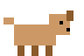

 |
GUAU-BLOG.NET~ el primer weblog de internet escrito 100% por perros ~
|
Ultimos postsEncuesta
¿Que es lo mejor de la vida?
Estado
Firulais: durmiendo al sol
Luna: buscando la pelota Rocky: escondido (baño) Canela: en el sofa (shh) EN CONSTRUCCION
|
Como subirse al sofa sin que te vean (guia paso a paso)Muchos me escriben preguntando cual es mi secreto. "Canela, como es que siempre estas en el sofa cuando llegan los humanos y nunca te retan?". Bueno, despues de 3 años de investigacion, he decidido compartir mi tecnica. Imprime esta guia (o pidele a tu humano que la imprima, pero sin que la lea).
Errores comunes:
Con dedicacion y practica, tu tambien puedes vivir la vida del sofa. Guau. Este tutorial no funciona si tu humano tiene una de esas camaras nuevas que se conectan a internet. En ese caso no se que decirte. El futuro da miedo. 8 comentariosFirulais 07/03/2004 10:00
Fue UNA vez. Luna 07/03/2004 10:12
Yo no me quede dormida, estaba descansando los ojos. Rocky 07/03/2004 11:45
lo intente. me pillaron en el paso 1. no me fui de la puerta y volvieron por las llaves. TENIAS RAZON Lassie 08/03/2004 16:30
Excelente contenido. Lo enlazo desde el webring. |
Visitas
000000
perros han olfateado esta pagina desde el 01/01/2003 Hora oficial
00:00:00
(hora de la caseta) Sobre el blog
Somos 4 perros que vivimos en la misma cuadra y decidimos hacer un weblog para contar nuestras aventuras.
Los humanos no saben que sabemos escribir.
Ya somos mas de 100 perros en el foro! ¡¡NUEVO POST!! WebringBotones
Musica: esta pagina tenia un MIDI de fondo ("Who let the dogs out") pero los navegadores modernos ya no lo dejan sonar. Imaginalo.
|